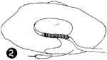
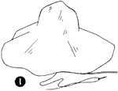
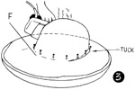
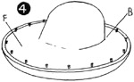
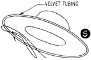

1952—How to Make Hats
by Ruby Carnahan
Blocking Rough Straw Bodies
BLOCKING ROUGH STRAW BODIES
(Illus. 1) Rough straw bodies can be made into hats without blocking. Simply wire the brim edge and sew a headband ribbon inside crown around headsize. (Illus. 2) When this method is used, hat brim will be large and the same size all around. To make the brim shorter in back, block the crown, drape and fold back of brim until desired effect is achieved.
To separate crown from brim or make brim smaller on a rough straw body, pull out and cut off cord running between braid rows. Another method is to measure desired depth of crown and draw a line on straw around crown, measure desired width of brim and draw a line on straw around brim. Machine stitch on line around crown and brim. Cut straw off 1/4" outside of machine stitching.
BLOCKING STRAW CROWN
Wrap straw body in a damp cloth for several hours before blocking. Tuck back of brim, at headsize, inside crown and pin. Taper tuck off to nothing on sides of brim. (Illus. 3) Steam press crown around headsize, pressing in any folds, and let dry on block. Apply a coat of straw sizing and let dry on block. Mark front of hat.
BLOCKING BRIM
(Illus. 4) Steam press any tucks in brim. Pin brim to flat side of utility brim block and steam press. Let dry on block. Apply a coat of straw sizing and let dry on block. Mark back and front of brim.
WIRING BRIM EDGE
Measure a wire to fit around brim about 2" inside of outer edge. Run wire through velvet tubing. Join ends of wire with a joiner, pull velvet tubing tight on wire and join tubing. To join tubing, lap one end of tubing over the other, turn raw edge under and sew. Pin wired tubing around underside of brim and sew, taking a long stitch through tubing and a short stitch through straw (lllus. 5).
Finish headsize with a swirled ribbon headband.